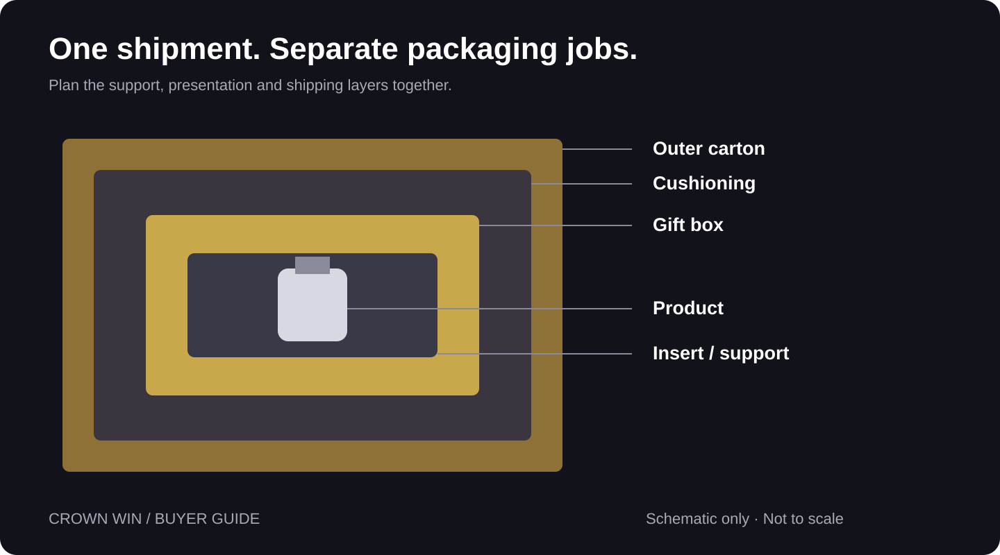
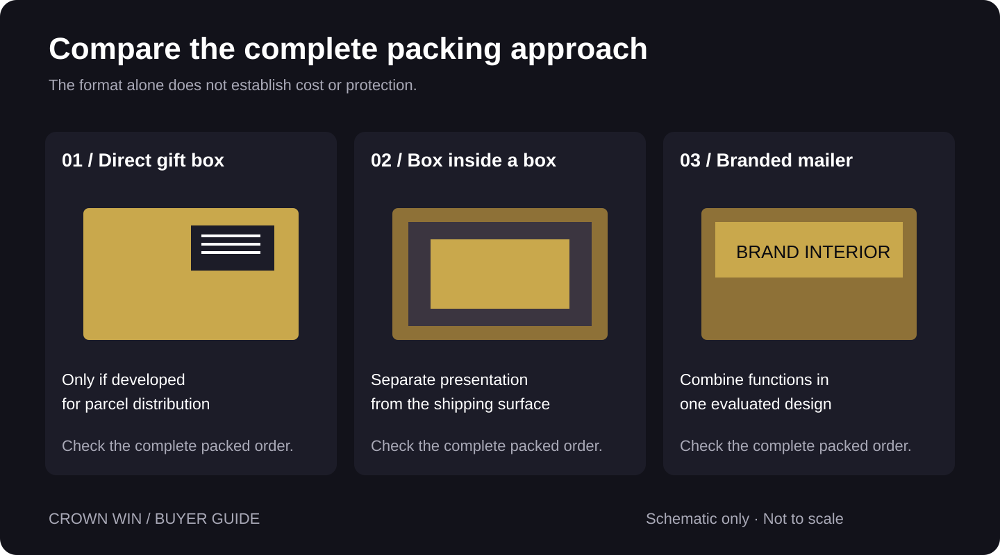
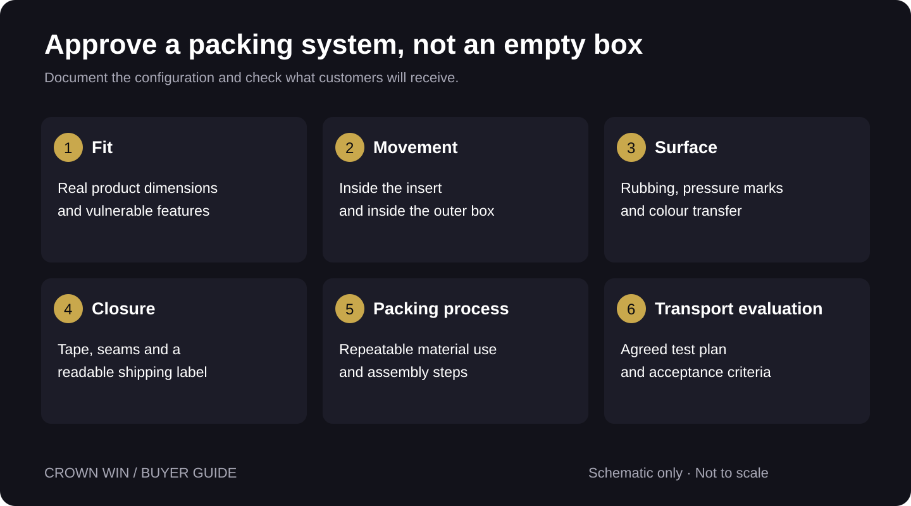

Can You Ship a Gift Box
Without an Outer Carton?
Protect the gift-ready finish and the product inside. A practical guide to outer cartons, cushioning and packed-sample checks.
A gift box can ship without an outer carton only if the complete pack is suitable for the product and parcel journey. For fragile contents or a gift-ready surface that must remain clean, evaluate a separate shipping carton and appropriate cushioning. Test the filled, sealed pack before choosing the final format.
Why does this question keep coming up?
A gift box has two journeys: it has to reach the customer, and then it has to look right when opened. Those goals can conflict when a decorative surface becomes the outside of a parcel.
In a Reddit ceramics discussion, a seller described using a gift box inside a separate shipping box, with packing material between the layers. A FedEx community thread included an account of a garment gift box travelling with a label attached directly to it. These are individual accounts, not verified damage statistics or a comparison trial. They highlight a useful buying question: which part of your packaging is responsible for presentation, and which part is responsible for transport?
Can a gift box travel on its own?
Sometimes—but only when the complete pack has been designed and evaluated for that shipping route. Board thickness, a magnetic closure or a premium finish alone does not establish parcel suitability.
A rigid presentation box may hold its shape on a shelf while leaving its corners, wrapped edges and closure exposed in distribution. If the customer is paying for a gift-ready finish, a scuffed lid or torn label area can matter even when the product survives.
For fragile products or a presentation surface that must arrive clean, evaluate an outer corrugated carton with appropriate cushioning. FedEx’s breakables guide recommends double-boxing fragile items; UPS guidance also identifies fragile and luxury items as uses for the two-box method. Follow the guidance relevant to the actual product, service and destination.
What does each packaging layer do?
Start with the product and work outward. Each layer should have an assigned job; adding another box without controlling movement may simply create another space for the contents to shift.
- Product support: an insert or individual protection stabilizes the item without loading delicate pumps, caps, handles or decorative details.
- Gift box: the presentation layer organizes the set and provides the opening experience.
- Surface protection: a compatible sleeve or wrap may reduce rubbing against a decorative finish. Check it on the actual sample.
- Cushioning: material between the inner and outer boxes helps manage movement and impacts when properly selected and fitted.
- Outer carton: the shipping layer carries the label, sealing tape and exposure to handling.
A fitted insert is not a substitute for evaluating the complete shipment. For more detail on product support, see our custom box insert guide.


Which shipping approach should you compare?
| Approach | When to evaluate it | Main checks |
|---|---|---|
| Gift box shipped directly | A pack specifically developed for parcel distribution | Closure security, exposed finish, label placement and complete-pack testing |
| Gift box inside an outer carton | Presentation-sensitive sets or fragile contents | Product restraint, cushioning, packed dimensions, packing time and transit performance |
| Shipping mailer with branded interior | A brand that can combine shipping and presentation in one engineered pack | Product suitability, protective performance, print wear and customer opening experience |
Compare the same product and delivery conditions across options. None of these formats is automatically the cheapest or the most protective.


How do you size the outer carton?
Measure the assembled, filled gift box—not its flat blank or its product cavity. Add the cushioning allowance required by the selected packaging method on every side, then confirm the outer carton’s usable internal dimensions.
Planning example: if an inner gift box measures 24 × 18 × 10 cm externally and your evaluated design uses 5 cm of cushioning per side, the outer carton needs approximately 34 × 28 × 20 cm of usable space before fitting tolerances. This is an arithmetic illustration, not a recommended protective specification. FedEx’s breakables guide calls for 3 inches of cushioning in and around the interior box; do not substitute this example for product-specific guidance.
The courier prices the finished parcel, so obtain its actual external dimensions and gross weight after sealing. Ask your carrier or fulfilment provider to price that parcel under your service and contract. A larger box can change the chargeable weight; a flat-packed gift box’s inbound freight saving does not establish a saving on the filled customer shipment.
What should you check on the packed sample?
- Fit: use the real product, or an agreed equivalent with matching dimensions, weight and vulnerability. Check the heaviest and most awkward SKU configurations.
- Movement: inspect the product inside the insert and the gift box inside the outer carton. A gentle handling check can reveal looseness, but cannot certify transport protection.
- Surface contact: look for rubbing, pressure marks, colour transfer and torn corners after packing and unpacking.
- Closure and label: check the complete sealed parcel, tape adhesion and a readable label on a suitable flat area. A magnet or ribbon should not be assumed to be a shipping closure.
- Repeatability: time the packing process and record material quantities so fulfilment staff can reproduce the approved arrangement.
- Transport evaluation: agree an appropriate test plan for the product and distribution route with a packaging specialist or qualified laboratory. Record the configuration, results and changes before approving production.
Set pass/fail criteria in advance: product condition, leakage where relevant, gift-box appearance, closure integrity and any acceptable cosmetic marks. Keep the approved sample and its specification linked to the order. Photographs document visible condition; they do not prove cushioning or compression performance.


What should you send to a packaging supplier?
Send the product dimensions and weight, fragile features, number of items per set, required presentation, order quantity, delivery destination and planned shipping method. Include the assembled gift-box dimensions if already fixed, plus any fulfilment constraints.
Ask which components are included in the quote: gift box, insert, sleeve, outer carton, cushioning, assembly and transport. Request separate empty-box packing details and finished customer-parcel details. These describe different shipments and should not be used interchangeably.
For perfume, aerosols, batteries or other potentially regulated contents, confirm product classification and carrier acceptance separately. A protective outer carton does not resolve shipping restrictions.
Frequently asked questions
Is a thick magnetic gift box strong enough for delivery?
Thickness and magnets do not answer that on their own. Evaluate the filled pack, closure, exposed surfaces and transport conditions together.
Does every gift box need another box?
No. Some packs combine presentation and shipping functions. Their suitability still needs to be demonstrated for the actual contents and route.
Is crumpled paper enough for a glass bottle?
Do not assume so. UPS describes crumpled kraft paper as void fill for lightweight, non-fragile items. Fragile contents need protection selected for their weight, geometry and handling risks.
Will double-boxing prevent every breakage?
No. Materials, support, clearances, packing consistency and handling all affect the result. Test the complete configuration rather than relying on the number of boxes.
Where should the delivery label go?
Place it on the outer shipping layer in accordance with the carrier’s requirements. Keep barcodes readable and avoid seams or folds that interfere with scanning.
Sources and research scope
Public discussions and carrier guidance reviewed on 6 November 2026. Reddit comments identify questions and individual experiences; they are not representative research, independent test evidence or carrier policy. The FedEx community anecdote was available through a search excerpt; the full thread could not be fetched during this review. Technical recommendations are linked to carrier guidance. Confirm the current instructions for your shipment.
Start with a testable specification.
Share product dimensions, weight, set contents, quantity and destination to discuss the gift box and sampling brief. Confirm outer-carton and cushioning scope separately.
→ Request a Custom Quote